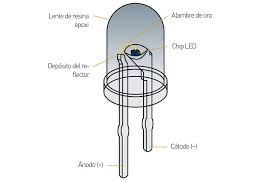
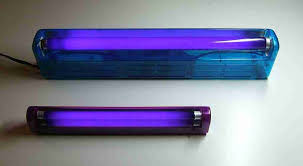

Un diodo "LED" es un dispositivo que permite el paso de corriente en un solo sentido y que al ser polarizado emite un haz de luz. Trabaja como un diodo normal pero al recibir corriente eléctrica emite luz. Por lo general son roja, verde y azul o en ingles "red", "green" y "blue" los también llamados RGB. La cual se llega a utilizar en pantalla, teclados, relojes y algunos otros aparatos tecnológicos ya sea con las combinación de los tres colores o también con un "LED" único como puede ser el casó de algunos focos "LED".
El primer led con emisión en el espectro visible (rojo) fue desarrollado en 1962 por Nick Holonyak.Jr cuando trabajaba en la General Electric. Holonyak presentó un informe en la revista Applied Physics Letters el 1 de diciembre de 1962.
El primer led azul de alto brillo fue presentado por Shuji Nakamura de la Nichia Corp. en 1994 partiendo del material Nitruro de Galio-Indio (InGaN). El logro de una alta eficiencia en los ledes azules fue rápidamente seguido por el desarrollo del primer led blanco. En tal dispositivo un “fósforo” (material fluorescente) de recubrimiento Y3 Al5 O12:Ce (conocido como YAG o granate de itrio y aluminio) absorbe algo de la emisión azul y genera luz amarilla por fluorescencia.

Parece que hemos tocado techo ¿no? Se acabó lo único que nos queda es hacer más pequeños y disminuir el consumo de los "LED"s existentes ¿O no? La verdad es que dentro del espectro de luz visible la luz azul es el último color pero hay algo más allá.
Shuji Nakamura ya no trabaja para Nichia Corp. Sin embargo sigue estando preente por la carrera para poder hacer los "LED" "UVC" pero ¿de que nos sirve la luz "UVC"? Tiene algunos usos por ejemplo:La luz UVC se usa para esterilizar superficies en algunos hospitales, aviones, oficinas, depósitos y fábricas cuando no hay humanos cerca. La luz UVC también se puede usar en sistemas de filtración de aire y para desinfectar el agua potable de parásitos resistentes al cloro.
Axel Yurem Contreras Herrera
Grupo 4
Número de lista:10